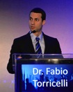
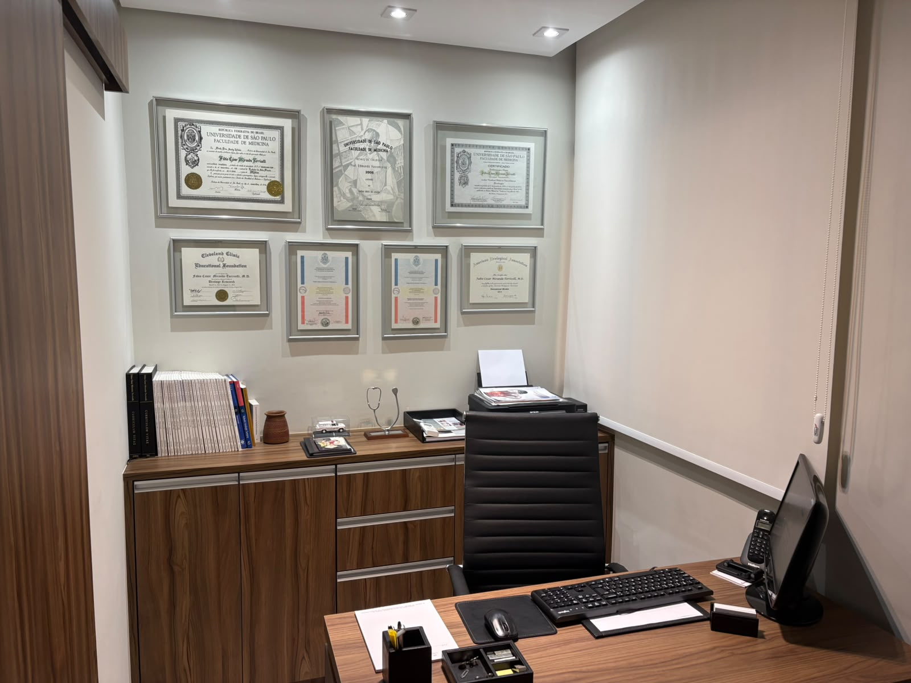
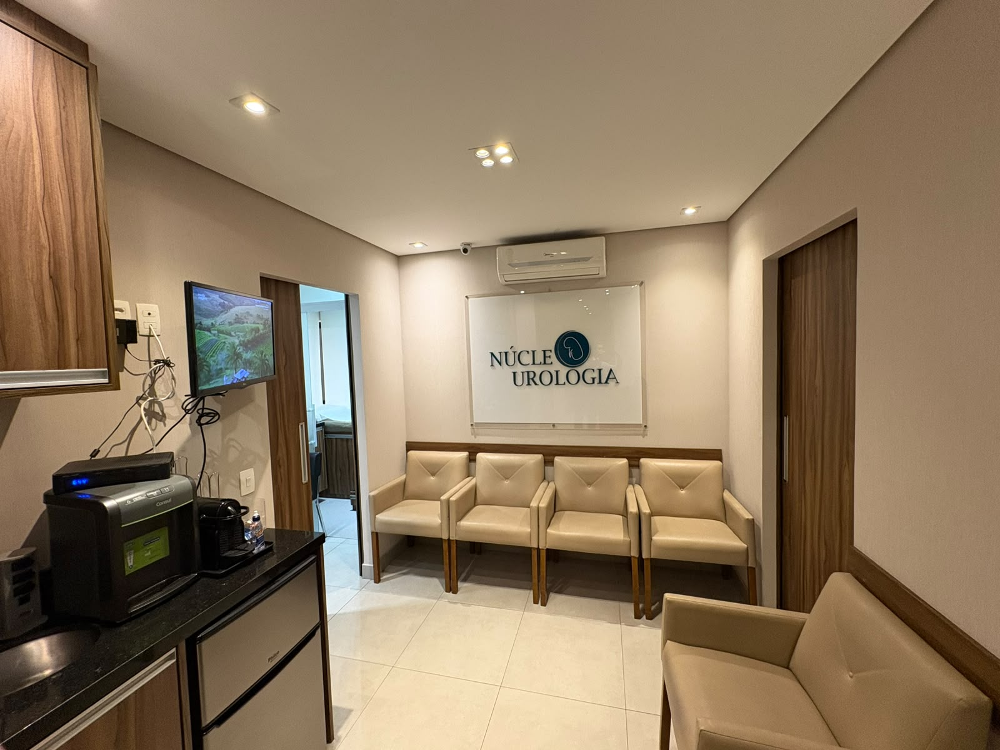
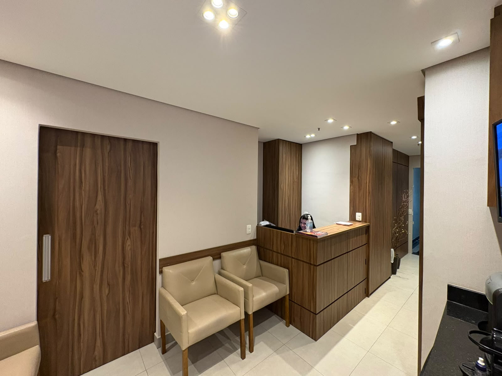
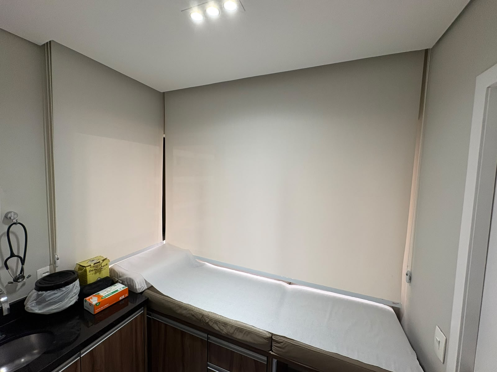

Endoscopic Combined Intrarenal Surgery: best practices and future perspectives
Revisão sobre a ECIRS para cálculos renais grandes e complexos, discutindo indicações, resultados e boas práticas.
Ver publicação ↗UROLOGIA · SÃO PAULO
Dr. Fábio Torricelli é urologista com atuação em endourologia, tratamento de cálculos renais e cirurgia urológica oncológica e robótica. Sua prática é integrada à sólida formação acadêmica, ao ensino e à pesquisa científica.
EXCELÊNCIA EM UROLOGIA COM BASE EM EVIDÊNCIAS
ÁREAS DE ATUAÇÃO
Ureteroscopia flexível, laser, PCNL, mini-PCNL e técnicas combinadas, conforme características do cálculo e do paciente.
Conheça os tratamentos → 02Diagnóstico e tratamento contemporâneo dos tumores de próstata, rim, bexiga e testículo.
Conheça os tratamentos → 03Abordagens minimamente invasivas quando oferecem benefício clínico e são adequadas ao caso.
Conheça as técnicas → 04Tratamento individualizado: medidas clínicas, medicamentos e técnicas endoscópicas modernas.
Conheça os tratamentos → 05Avaliação individualizada de condições urológicas selecionadas da infância e adolescência.
Saiba mais →FORMAÇÃO
Atuação acadêmica: coordenação da graduação em Urologia e atuação como médico assistente da Divisão de Urologia do HC-FMUSP. Membro da Sociedade Brasileira de Urologia e da American Urological Association.
PRODUÇÃO CIENTÍFICA
Dez trabalhos representativos, com explicações breves.
Revisão sobre a ECIRS para cálculos renais grandes e complexos, discutindo indicações, resultados e boas práticas.
Ver publicação ↗Análise de longa duração da cirurgia percutânea para cálculos renais e da evolução de técnica, segurança e resultados.
Ver publicação ↗Identifica características associadas a maior risco de infecção grave após cirurgia percutânea, contribuindo para o planejamento de segurança.
Ver publicação ↗Revisão das opções para cálculos na parte inferior do rim e dos fatores usados para escolher o tratamento mais apropriado.
Ver publicação ↗Estudo prospectivo sobre características que ajudam a prever o resultado da litotripsia por ondas de choque.
Ver publicação ↗Compara estratégias para tratar fragmentos que permanecem após cirurgia percutânea e orientar o tratamento complementar.
Ver publicação ↗Avalia a cirurgia percutânea em pacientes com rim único, situação em que preservar função renal e reduzir complicações é especialmente importante.
Ver publicação ↗Mostra que pacientes com lesão medular não devem ser classificados automaticamente como casos de máxima complexidade; a carga de cálculos continua relevante.
Ver publicação ↗Investiga a relação entre alterações de colesterol e triglicérides e o risco de formação de cálculos renais.
Ver publicação ↗Compara fios-guia utilizados em procedimentos endourológicos, avaliando propriedades técnicas relacionadas à eficiência e segurança.
Ver publicação ↗CONSULTÓRIO




Rua Barata Ribeiro, 380, conjunto 74
Bela Vista · São Paulo · SP
Telefone: (11) 2768-4552
Abrir no Google Maps →